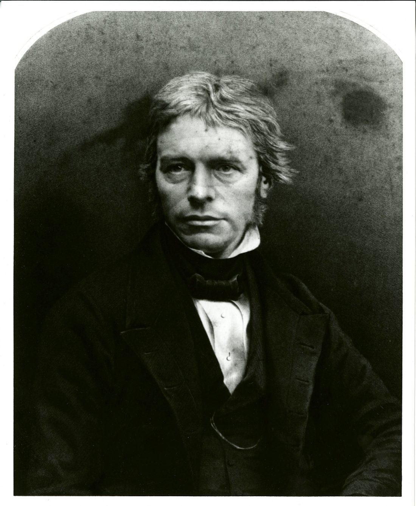

迈克尔·法拉第（1791—1867），英国物理学家、化学家。生于伦敦一个铁匠家庭，只受过两年正规教育，13 岁到装订铺当学徒，靠装订的书自学化学与电学。
1813 年他成为化学家戴维的助手，从此走上研究之路。1831 年发现电磁感应，造出世界上第一台发电机；他提出的“力线”与“场”，后来被麦克斯韦写成方程。
他还是科普的先行者：皇家研究所的“圣诞讲座”由他开创并主讲十九次。晚年他拒绝了封爵与皇家学会会长之职，也拒绝为战争研制毒气。
面向中学生的科普小站：按时间顺序讲故事，把难词讲成人话。每个核心概念都能点开弹窗看通俗解释；想深入就读“详解页”；想动手就玩“实验”；不确定哪个词什么意思，去词典里搜。